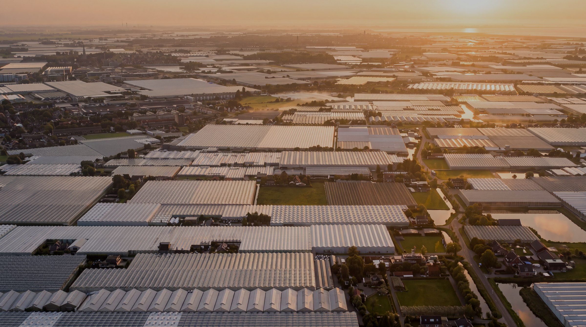
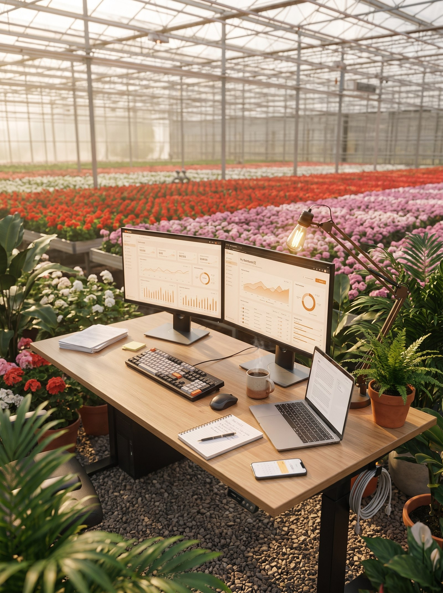

Over onsAbout us
Groen goud
in handenHolding
green gold
Een innovatieve verkooporganisatie voor kwekers. Data én persoonlijke aandacht, met ruim 80 jaar verkoopervaring en jong talent in één team.An innovative sales organisation for growers. Data and personal attention, with 80+ years of sales experience and young talent in one team.

Sinds 1985Since 1985Ons verhaalOur story
Ervaring met
een frisse blikExperience with
fresh eyes
De Plantenmakelaars is een innovatieve verkooporganisatie voor kwekers. Wij verkopen jouw product aan de juiste kopers, van exporteurs tot de grote ketens en tuincentra, zodat jij je volledig op de teelt kunt richten. Die weg kennen we op ons duimpje.De Plantenmakelaars is an innovative sales organisation for growers. We sell your product to the right buyers, from exporters to the major retail chains and garden centres, so you can focus fully on growing. We know that route inside out.
Bij ons draait het om data én persoonlijke aandacht. Door AI slim in te zetten, zien we precies waar de kansen voor jouw handel liggen en houden we tijd over voor het echte werk: naast je staan. Ruim 80 jaar verkoopervaring en jong talent komen samen in één hecht team.For us it's all about data and personal attention. By using AI smartly, we see exactly where the opportunities for your trade are and keep time for the real work: standing beside you. Over 80 years of sales experience and young talent come together in one close-knit team.
En bovenal: eerlijkheid en korte lijntjes. Je hebt vaste gezichten die jou en je bedrijf kennen, en we gaan voor een langdurige relatie, niet voor een snelle deal. Zo weten we wat er bij je speelt en halen we het maximale uit jouw product.And above all: honesty and short lines. You get familiar faces who know you and your business, and we go for a lasting relationship, not a quick deal. That way we know what's going on with you and get the most out of your product.
 Team
TeamMakelaar 1Broker 1
Menno van Es
Menno vertaalt marktkennis naar strategie. Met tientallen jaren ervaring in de sierteelt en een scherp oog voor commerciële kansen helpt hij kwekers hun product op de juiste plek in de markt te zetten. Hij denkt in kansen, houdt de trends in de gaten en kijkt altijd een stap vooruit.Menno turns market knowledge into strategy. With decades of floriculture experience and a sharp eye for commercial opportunity, he helps growers position their product in exactly the right place. He thinks in opportunities, watches the trends and always looks a step ahead.
- Commerciële strategie en marktontwikkelingCommercial strategy and market development
- Datagedreven advies, dichtbij de kwekerData-driven advice, close to the grower
Makelaar 2Broker 2
Wilfred Pel
Wilfred is de relatiebouwer van het team. Hij kent de weg naar exporteurs, ketens en tuincentra en zorgt dat jouw handel dagelijks bij de juiste kopers terechtkomt. Korte lijnen, een eerlijk verhaal en persoonlijk contact: daar draait het bij hem om.Wilfred is the relationship builder of the team. He knows his way to exporters, retail chains and garden centres and makes sure your trade reaches the right buyers every day. Short lines, an honest story and personal contact: that's what it's about for him.
- Dagelijkse verkoop via daghandel, actie en retailDaily sales through day trade, promotions and retail
- Sterke relaties met exporteurs, ketens en tuincentraStrong ties with exporters, chains and garden centres
 Team
Team Team
TeamMakelaar 3Broker 3
Wouter van Es
Wouter combineert verkoop met een creatief oog. Naast het onderhouden van klantrelaties zorgt hij met eigen fotografie en beeldbewerking dat elk product er op zijn best uitziet. Van een strakke foto op Floriday tot de puntjes op de i in Photoshop en Lightroom.Wouter combines sales with a creative eye. Alongside nurturing customer relationships, his own photography and image editing make sure every product looks its best. From a crisp photo on Floriday to the finishing touches in Photoshop and Lightroom.
- Klantrelaties en dagelijkse verkoopCustomer relationships and daily sales
- Eigen productfotografie en beeldbewerkingIn-house product photography and editing
Digitale collegaDigital colleague
FTE Digital
FTE Digital is onze digitale collega, ontwikkeld met Data Botanica. Hij analyseert dag en nacht de markt, jouw handel en de kansen die daarin liggen, zonder ooit een slecht humeur of een pauze nodig te hebben. Wat hij ziet, weet hij tot in de puntjes.FTE Digital is our digital colleague, built with Data Botanica. Day and night he analyses the market, your trade and the opportunities within it, without ever having a bad mood or needing a break. What he sees, he knows down to the last detail.
Die kennis levert vooral tijd op. Tijd die wij steken in wat écht telt: het persoonlijke gesprek met jou en je klanten. FTE Digital rekent, wij handelen.Above all, that knowledge saves time. Time we spend on what really counts: the personal conversation with you and your customers. FTE Digital does the maths, we do the trading.
Vorig jaar een goede actie gehad bij een keten? Dan onthoudt hij dat en tikt hij ons precies op tijd op de schouder, zodat je dit jaar gelijk weer kunt inhaken. En dat is nog maar het begin van wat data en AI voor jouw handel kunnen betekenen.A strong promotion at a retail chain last year? He remembers it and nudges us at exactly the right moment, so you can jump right back in this year. And that's only the beginning of what data and AI can mean for your trade.
- Data en AI die kansen zichtbaar makenData and AI that surface opportunities
- Meer tijd voor persoonlijk contactMore time for personal contact
 Team
Team
Benieuwd wat we
voor jou kunnen doen?Curious what we
can do for you?
Een innovatieve verkooporganisatie voor kwekers. Data én persoonlijke aandacht.An innovative sales organisation for growers. Data and personal attention.